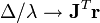

Gauss–Newton algorithm
From Wikipedia, the free encyclopedia
The Gauss–Newton algorithm is a method used to solve non-linear least squares problems. It can be seen as a modification of Newton's method for finding a minimum of a function. Unlike Newton's method, the Gauss–Newton algorithm can only be used to minimize a sum of squared function values, but it has the advantage that second derivatives, which can be challenging to compute, are not required.
Non-linear least squares problems arise for instance in non-linear regression, where parameters in a model are sought such that the model is in good agreement with available observations.
The method is named after the mathematicians Carl Friedrich Gauss and Isaac Newton.
Contents[hide] |
Description
Given m functions r1, …, rm of n variables β = (β1, …, βn), with m ≥ n, the Gauss–Newton algorithm finds the minimum of the sum of squares

Starting with an initial guess for the minimum, the method proceeds by the iterations
where the increment Δ is the solution to the normal equations:
Here, r is the vector of functions ri, and Jr is the m×n Jacobian matrix of r with respect to β, both evaluated at βs. The superscript denotes the matrix transpose.
In data fitting, where the goal is to find the parameters β such that a given model function y = f(x, β) fits best some data points (xi, yi), the functions ri are the residuals
Then, the increment Δ can be expressed in terms of the Jacobian of the function f, as
Notes
The assumption m ≥ n in the algorithm statement is necessary, as otherwise the matrix JrTJr is not invertible and the normal equations cannot be solved.
The Gauss–Newton algorithm can be derived by linearly approximating the vector of functions ri. Using Taylor's theorem, we can write at every iteration:
with The task of finding Δ minimizing the sum of squares of the right-hand side, i.e. , is a linear least squares problem, which can be solved explicitly, yielding the normal equations in the algorithm.
The normal equations are m linear simultaneous equations in the unknown increments, Δ. They may be solved in one step, using Cholesky decomposition, or, better, the QR factorization of Jr. For large systems, an iterative method, such as the conjugate gradient method, may be more efficient. If there is a linear dependence between columns of Jr, the iterations will fail as JrTJr becomes singular.
Example
{kind=link}
In this example, the Gauss–Newton algorithm will be used to fit a model to some data by minimizing the sum of squares of errors between the data and model's predictions.
In a biology experiment studying the relation between substrate concentration [S] and reaction rate in an enzyme-mediated reaction, the data in the following table were obtained.
-
i 1 2 3 4 5 6 7 [S] 0.038 0.194 0.425 0.626 1.253 2.500 3.740 rate 0.050 0.127 0.094 0.2122 0.2729 0.2665 0.3317
It is desired to find a curve (model function) of the form
that fits best the data in the least squares sense, with the parameters Vmax and KM to be determined.
Denote by xi and yi the value of [S] and the rate from the table, Let β1 = Vmax and β2 = KM. We will find β1 and β2 such that the sum of squares of the residuals
- ()
is minimized.
The Jacobian of the vector of residuals ri in respect to the unknowns βj is an matrix with the i-th row having the entries
Starting with the initial estimates of β1=0.9 and β2=0.2, after five iterations of the Gauss–Newton algorithm the optimal values and are obtained. The sum of squares of residuals decreased from the initial value of 1.445 to 0.00784 after the fifth iteration. The plot in the figure on the right shows the curve determined by the model for the optimal parameters versus the observed data.
Convergence properties
It can be shown that the increment Δ is a descent direction for S [2], and, if the algorithm converges, then the limit is a stationary point of S. However, convergence is not guaranteed, not even local convergence as in Newton's method.
The rate of convergence of the Gauss–Newton algorithm can approach quadratic.[3] The algorithm may converge slowly or not at all if the initial guess is far from the minimum or the matrix is ill-conditioned.
The Gauss–Newton algorithm may fail to converge. For example, consider the problem with m = 2 equations and n = 1 variable, given by
The optimum is at β = 0. If λ = 0 then the problem is in fact linear and the method finds the optimum in one iteration. If |λ| < 1 then the method converges linearly and the error decreases asymptotically with a factor |λ| at every iteration. However, if |λ| > 1, then the method does not even converge locally.[4]
Derivation from Newton's method
In what follows, the Gauss–Newton algorithm will be derived from Newton's method for function optimization via an approximation. As a consequence, the rate of convergence of the Gauss–Newton algorithm is at most quadratic.
The recurrence relation for Newton's method for minimizing a function S of parameters, β, is
where g denotes the gradient vector of S and H denotes the Hessian matrix of S. Since , the gradient is given by
Elements of the Hessian are calculated by differentiating the gradient elements, gj, with respect to βk
The Gauss–Newton method is obtained by ignoring the second-order derivative terms (the second term in this expression). That is, the Hessian is approximated by
where are entries of the Jacobian Jr. The gradient and the approximate Hessian can be written in matrix notation as
These expressions are substituted into the recurrence relation above to obtain the operational equations
Convergence of the Gauss–Newton method is not guaranteed in all instances. The approximation
that needs to hold to be able to ignore the second-order derivative terms may be valid in two cases, for which convergence is to be expected.[5]
- The function values ri are small in magnitude, at least around the minimum.
- The functions are only "mildly" non linear, so that is relatively small in magnitude.
Improved versions
With the Gauss–Newton method the sum of squares S may not decrease at every iteration. However, since Δ is a descent direction, unless is a stationary point, it holds that for all sufficiently small α > 0. Thus, if divergence occurs, one solution is to employ a fraction, α, of the increment vector, Δ in the updating formula
- .
In other words, the increment vector is too long, but it points in "downhill", so going just a part of the way will decrease the objective function S. An optimal value for α can be found by using a line search algorithm, that is, the magnitude of α is determined by finding the value that minimizes S, usually using a direct search method in the interval 0 < α < 1.
In cases where the direction of the shift vector is such that the optimal fraction, α, is close to zero, an alternative method for handling divergence is the use of the Levenberg–Marquardt algorithm, also known as the "trust region method".[1] The normal equations are modified in such a way that the increment vector is rotated towards the direction of steepest descent,
- ,
where D is a positive diagonal matrix. Note that when D is the identity matrix and , then , therefore the direction of Δ approaches the direction of the gradient .
The so-called Marquardt parameter, λ, may also be optimized by a line search, but this is inefficient as the shift vector must be re-calculated every time λ is changed. A more efficient strategy is this. When divergence occurs increase the Marquardt parameter until there is a decrease in S. Then, retain the value from one iteration to the next, but decrease it if possible until a cut-off value is reached when the Marquardt parameter can be set to zero; the minimization of S then becomes a standard Gauss–Newton minimization.
Related algorithms
In a quasi-Newton method, such as that due to Davidon, Fletcher and Powell an estimate of the full Hessian, , is built up numerically using first derivatives only so that after n refinement cycles the method closely approximates to Newton's method in performance.
Another method for solving least squares problems using only first derivatives is gradient descent. However, this method does not take into account the second derivatives even approximately. Consequently, it is highly inefficient for many functions.
References and notes
- ^ a b Björck, A. (1996). Numerical methods for least squares problems. SIAM, Philadelphia. ISBN 0-89871-360-9.
- ^ Björck, p260
- ^ Björck, p341, 342
- ^ Fletcher, Roger (1987), Practical methods of optimization (2nd ed.), New York: John Wiley & Sons, p. 113, ISBN 978-0-471-91547-8.
- ^ Nocedal, Jorge; Wright, Stephen (1999). Numerical optimization. New York: Springer. ISBN 0387987932.
|
|||||||||||||||||||||||||||||||||||||||||||